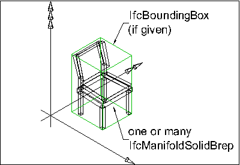

7.5.3.37 IfcFan
7.5.3.37.1 Semantic definition
A fan is a device which imparts mechanical work on a gas. A typical usage of a fan is to induce airflow in a building services air distribution system.
{ .note}
7.5.3.37.2 Entity inheritance
7.5.3.37.3 Attributes
| # | Attribute | Type | Description |
|---|---|---|---|
| IfcRoot (4) | |||
| 1 | GlobalId | IfcGloballyUniqueId |
Assignment of a globally unique identifier within the entire software world. |
| 2 | OwnerHistory | OPTIONAL IfcOwnerHistory |
Assignment of the information about the current ownership of that object, including owning actor, application, local identification and information captured about the recent changes of the object. |
| 3 | Name | OPTIONAL IfcLabel |
An optional name for use by the participating software systems or users. For some subtypes of IfcRoot the insertion of the Name attribute may be required. This would be enforced by a where rule. |
| 4 | Description | OPTIONAL IfcText |
An optional description, provided to exchange informative comments. |
| IfcObjectDefinition (7) | |||
| Decomposes | SET [0:1] OF IfcRelAggregates FOR RelatedObjects |
References to the decomposition relationship being an aggregation. It determines that this object definition is a part within an unordered whole/part decomposition relationship. An object definition can only be part of a single decomposition (to allow hierarchical structures only). |
|
| HasAssignments | SET [0:?] OF IfcRelAssigns FOR RelatedObjects |
Reference to the relationship objects, that assign (by an association relationship) other subtypes of IfcObject to this object instance. Examples are the association to products, processes, controls, resources or groups. |
|
| HasAssociations | SET [0:?] OF IfcRelAssociates FOR RelatedObjects |
Reference to the relationship objects, that associates external references or other resource definitions to the object. Examples are the association to library, documentation or classification. |
|
| HasContext | SET [0:1] OF IfcRelDeclares FOR RelatedDefinitions |
References to the context providing context information such as project unit or representation context. It should only be asserted for the uppermost non-spatial object. |
|
| IsDecomposedBy | SET [0:?] OF IfcRelAggregates FOR RelatingObject |
References to the decomposition relationship being an aggregation. It determines that this object definition is the whole within an unordered whole/part decomposition relationship. An object definition can be aggregated by several other objects (occurrences or parts). |
|
| IsNestedBy | SET [0:?] OF IfcRelNests FOR RelatingObject |
References to the decomposition relationship being a nesting. It determines that this object definition is the whole within an ordered whole/part decomposition relationship. An object or object type can be nested by several other objects (occurrences or types). |
|
| Nests | SET [0:1] OF IfcRelNests FOR RelatedObjects |
References to the decomposition relationship being a nesting. It determines that this object definition is a part within an ordered whole/part decomposition relationship. An object occurrence or type can only be part of a single decomposition (to allow hierarchical structures only). |
|
| IfcObject (5) | |||
| 5 | ObjectType | OPTIONAL IfcLabel |
The type denotes a particular type that indicates the object further. The use has to be established at the level of instantiable subtypes. In particular it holds the user defined type, if the enumeration of the attribute PredefinedType is set to USERDEFINED or when the concrete entity instantiated does not have a PredefinedType attribute. The latter is the case in some exceptional leaf classes and when instantiating IfcBuiltElement directly. |
| Declares | SET [0:?] OF IfcRelDefinesByObject FOR RelatingObject |
Link to the relationship object pointing to the reflected object(s) that receives the object definitions. The reflected object has to be part of an object occurrence decomposition. The associated IfcObject, or its subtypes, provides the specific information (as part of a type, or style, definition), that is common to all reflected instances of the declaring IfcObject, or its subtypes. |
|
| IsDeclaredBy | SET [0:1] OF IfcRelDefinesByObject FOR RelatedObjects |
Link to the relationship object pointing to the declaring object that provides the object definitions for this object occurrence. The declaring object has to be part of an object type decomposition. The associated IfcObject, or its subtypes, contains the specific information (as part of a type, or style, definition), that is common to all reflected instances of the declaring IfcObject, or its subtypes. |
|
| IsDefinedBy | SET [0:?] OF IfcRelDefinesByProperties FOR RelatedObjects |
Set of relationships to property set definitions attached to this object. Those statically or dynamically defined properties contain alphanumeric information content that further defines the object. |
|
| IsTypedBy | SET [0:1] OF IfcRelDefinesByType FOR RelatedObjects |
Set of relationships to the object type that provides the type definitions for this object occurrence. The then associated IfcTypeObject, or its subtypes, contains the specific information (or type, or style), that is common to all instances of IfcObject, or its subtypes, referring to the same type. |
|
| IfcProduct (5) | |||
| 6 | ObjectPlacement | OPTIONAL IfcObjectPlacement |
This establishes the object coordinate system and placement of the product in space. The placement can either be absolute (relative to the world coordinate system), relative (relative to the object placement of another product), or constrained (e.g. relative to grid axes, or to a linear positioning element). The type of placement is determined by the various subtypes of IfcObjectPlacement. An object placement must be provided if a representation is present. |
| 7 | Representation | OPTIONAL IfcProductRepresentation |
Reference to the representations of the product, being either a representation (IfcProductRepresentation) or as a special case of a shape representation (IfcProductDefinitionShape). The product definition shape provides for multiple geometric representations of the shape property of the object within the same object coordinate system, defined by the object placement. |
| PositionedRelativeTo | SET [0:?] OF IfcRelPositions FOR RelatedProducts |
Reference to the IfcRelPositions relationship, which defines its relationship with a positioning element. |
|
| ReferencedBy | SET [0:?] OF IfcRelAssignsToProduct FOR RelatingProduct |
Reference to the IfcRelAssignsToProduct relationship, by which other products, processes, controls, resources or actors (as subtypes of IfcObjectDefinition) can be related to this product. |
|
| ReferencedInStructures | SET [0:?] OF IfcRelReferencedInSpatialStructure FOR RelatedElements |
Reference to the objectified relationship IfcRelReferencedInSpatialStructure may be used to relate a product to one or more spatial structure elements in addition to the one in which it is primarily contained. |
|
| IfcElement (13) | |||
| 8 | Tag | OPTIONAL IfcIdentifier |
The tag (or label) identifier at the particular instance of a product, e.g. the serial number, or the position number. It is the identifier at the occurrence level. |
| ConnectedFrom | SET [0:?] OF IfcRelConnectsElements FOR RelatedElement |
Reference to the element connection relationship. The relationship then refers to the other element that is connected to this element. |
|
| ConnectedTo | SET [0:?] OF IfcRelConnectsElements FOR RelatingElement |
Reference to the element connection relationship. The relationship then refers to the other element to which this element is connected to. |
|
| ContainedInStructure | SET [0:1] OF IfcRelContainedInSpatialStructure FOR RelatedElements |
Containment relationship to the spatial structure element, to which the element is primarily associated. This containment relationship has to be hierarchical, i.e. an element may only be assigned directly to zero or one spatial structure. |
|
| FillsVoids | SET [0:1] OF IfcRelFillsElement FOR RelatedBuildingElement |
Reference to the IfcRelFillsElement relationship that puts the element as a filling into the opening created within another element. |
|
| HasCoverings | SET [0:?] OF IfcRelCoversBldgElements FOR RelatingBuildingElement |
Reference to IfcCovering by virtue of the objectified relationship IfcRelCoversBldgElements. It defines the concept of an element having coverings associated. |
|
| HasOpenings | SET [0:?] OF IfcRelVoidsElement FOR RelatingBuildingElement |
Reference to the IfcRelVoidsElement relationship that creates an opening in an element. An element can incorporate zero-to-many openings. For each opening, that voids the element, a new relationship IfcRelVoidsElement is generated. |
|
| HasProjections | SET [0:?] OF IfcRelProjectsElement FOR RelatingElement |
Projection relationship that adds a feature (using a Boolean union) to the IfcBuiltElement. |
|
| HasSurfaceFeatures | SET [0:?] OF IfcRelAdheresToElement FOR RelatingElement |
Reference to the IfcRelAdheresToElement relationship that adheres a IfcSurfaceFeature to an element. An element can incorporate zero-to-many surface features in one relationship. |
|
| InterferesElements | SET [0:?] OF IfcRelInterferesElements FOR RelatingElement |
Reference to the interference relationship to indicate the element that interferes. The relationship, if provided, indicates that this element has an interference with one or many other elements. |
|
| IsConnectionRealization | SET [0:?] OF IfcRelConnectsWithRealizingElements FOR RealizingElements |
Reference to the connection relationship with realizing element. The relationship, if provided, assigns this element as the realizing element to the connection, which provides the physical manifestation of the connection relationship. |
|
| IsInterferedByElements | SET [0:?] OF IfcRelInterferesElements FOR RelatedElement |
Reference to the interference relationship to indicate the element that is interfered. The relationship, if provided, indicates that this element has an interference with one or many other elements. |
|
| ProvidesBoundaries | SET [0:?] OF IfcRelSpaceBoundary FOR RelatedBuildingElement |
Reference to space boundaries by virtue of the objectified relationship IfcRelSpaceBoundary. It defines the concept of an element bounding spaces. |
|
| IfcDistributionElement (1) | |||
| HasPorts | SET [0:?] OF IfcRelConnectsPortToElement FOR RelatedElement |
Reference to the element to port connection relationship. The relationship then refers to the port which is contained in this element. |
|
| IfcDistributionFlowElement (1) | |||
| HasControlElements | SET [0:1] OF IfcRelFlowControlElements FOR RelatingFlowElement |
Reference to the relationship object that relates control elements. |
|
| Click to show 36 hidden inherited attributes Click to hide 36 inherited attributes | |||
| IfcFan (1) | |||
| 9 | PredefinedType | OPTIONAL IfcFanTypeEnum |
A list of types to further identify the object. Some property sets may be specifically applicable to one of these types. |
7.5.3.37.4 Formal propositions
| Name | Description |
|---|---|
| CorrectPredefinedType |
Either the PredefinedType attribute is unset (e.g. because an IfcFanType is associated), or the inherited attribute ObjectType shall be provided, if the PredefinedType is set to USERDEFINED. |
|
|
| CorrectTypeAssigned |
Either there is no fan type object associated, i.e. the IsTypedBy inverse relationship is not provided, or the associated type object has to be of type IfcFanType. |
|
|
7.5.3.37.5 Property sets
-
Pset_Condition
- AssessmentDate
- AssessmentCondition
- AssessmentDescription
- AssessmentType
- AssessmentMethod
- LastAssessmentReport
- NextAssessmentDate
- AssessmentFrequency
-
Pset_ConstructionAdministration
- ProcurementMethod
- SpecificationSectionNumber
- SubmittalIdentifer
-
Pset_ConstructionOccurence
- InstallationDate
- ModelNumber
- TagNumber
- AssetIdentifier
-
Pset_ElectricalDeviceCommon
- RatedCurrent
- RatedVoltage
- NominalFrequencyRange
- PowerFactor
- ConductorFunction
- NumberOfPoles
- HasProtectiveEarth
- InsulationStandardClass
- IP_Code
- IK_Code
- EarthingStyle
- HeatDissipation
- Power
- NominalPowerConsumption
- NumberOfPowerSupplyPorts
-
Pset_ElectricalDeviceCompliance
- ElectroMagneticStandardsCompliance
- ExplosiveAtmosphereStandardsCompliance
- FireProofingStandardsCompliance
- LightningProtectionStandardsCompliance
-
Pset_ElementKinematics
- CyclicPath
- CyclicRange
- LinearPath
- LinearRange
- MaximumAngularVelocity
- MaximumConstantSpeed
- MinimumTime
-
Pset_ElementSize
- NominalLength
- NominalWidth
- NominalHeight
-
Pset_EnergyRequirements
- EnergyConsumption
- PowerDemand
- EnergySourceLabel
- EnergyConversionEfficiency
-
Pset_EnvironmentalCondition
- ReferenceAirRelativeHumidity
- ReferenceEnvironmentTemperature
- MaximumAtmosphericPressure
- StorageTemperatureRange
- MaximumWindSpeed
- OperationalTemperatureRange
- MaximumRainIntensity
- SaltMistLevel
- SeismicResistance
- SmokeLevel
- MaximumSolarRadiation
-
Pset_EnvironmentalEmissions
- CarbonDioxideEmissions
- SulphurDioxideEmissions
- NitrogenOxidesEmissions
- ParticulateMatterEmissions
- NoiseEmissions
-
Pset_EnvironmentalImpactIndicators
- Reference
- FunctionalUnitReference
- IndicatorsUnit
- LifeCyclePhase
- ExpectedServiceLife
- TotalPrimaryEnergyConsumptionPerUnit
- WaterConsumptionPerUnit
- HazardousWastePerUnit
- NonHazardousWastePerUnit
- ClimateChangePerUnit
- AtmosphericAcidificationPerUnit
- RenewableEnergyConsumptionPerUnit
- NonRenewableEnergyConsumptionPerUnit
- ResourceDepletionPerUnit
- InertWastePerUnit
- RadioactiveWastePerUnit
- StratosphericOzoneLayerDestructionPerUnit
- PhotochemicalOzoneFormationPerUnit
- EutrophicationPerUnit
-
Pset_EnvironmentalImpactValues
- TotalPrimaryEnergyConsumption
- WaterConsumption
- HazardousWaste
- NonHazardousWaste
- ClimateChange
- AtmosphericAcidification
- RenewableEnergyConsumption
- NonRenewableEnergyConsumption
- ResourceDepletion
- InertWaste
- RadioactiveWaste
- StratosphericOzoneLayerDestruction
- PhotochemicalOzoneFormation
- Eutrophication
- LeadInTime
- Duration
- LeadOutTime
-
Pset_FanCentrifugal
CENTRIFUGALAIRFOIL- DischargePosition
- DirectionOfRotation
- FanArrangement
-
Pset_FanCentrifugal
CENTRIFUGALBACKWARDINCLINEDCURVED- DischargePosition
- DirectionOfRotation
- FanArrangement
-
Pset_FanCentrifugal
CENTRIFUGALFORWARDCURVED- DischargePosition
- DirectionOfRotation
- FanArrangement
-
Pset_FanCentrifugal
CENTRIFUGALRADIAL- DischargePosition
- DirectionOfRotation
- FanArrangement
-
Pset_FanOccurrence
- DischargeType
- ApplicationOfFan
- CoilPosition
- MotorPosition
- FanMountingType
- FractionOfMotorHeatToAirStream
- ImpellerDiameter
-
Pset_FanPHistory
- FanRotationSpeed
- WheelTipSpeed
- FanEfficiency
- OverallEfficiency
- FanPowerRate
- ShaftPowerRate
- DischargeVelocity
- DischargePressureLoss
- DrivePowerLoss
-
Pset_FanTypeCommon
- Reference
- Status
- MotorDriveType
- CapacityControlType
- OperationTemperatureRange
- NominalAirFlowRate
- NominalTotalPressure
- NominalStaticPressure
- NominalRotationSpeed
- NominalPowerRate
- OperationalCriteria
- PressureCurve
- EfficiencyCurve
-
Pset_InstallationOccurrence
- InstallationDate
- AcceptanceDate
- PutIntoOperationDate
-
Pset_MaintenanceStrategy
- AssetCriticality
- AssetFrailty
- AssetPriority
- MonitoringType
- AccidentResponse
-
Pset_MaintenanceTriggerCondition
- ConditionTargetPerformance
- ConditionMaintenanceLevel
- ConditionReplacementLevel
- ConditionDisposalLevel
-
Pset_MaintenanceTriggerDuration
- DurationTargetPerformance
- DurationMaintenanceLevel
- DurationReplacementLevel
- DurationDisposalLevel
-
Pset_MaintenanceTriggerPerformance
- TargetPerformance
- PerformanceMaintenanceLevel
- ReplacementLevel
- DisposalLevel
-
Pset_ManufacturerOccurrence
- AcquisitionDate
- BarCode
- SerialNumber
- BatchReference
- AssemblyPlace
- ManufacturingDate
-
Pset_ManufacturerTypeInformation
- GlobalTradeItemNumber
- ArticleNumber
- ModelReference
- ModelLabel
- Manufacturer
- ProductionYear
- AssemblyPlace
- OperationalDocument
- SafetyDocument
- PerformanceCertificate
-
Pset_RepairOccurrence
- RepairContent
- RepairDate
- MeanTimeToRepair
-
Pset_Risk
- RiskName
- RiskType
- NatureOfRisk
- RiskAssessmentMethodology
- UnmitigatedRiskLikelihood
- UnmitigatedRiskConsequence
- UnmitigatedRiskSignificance
- MitigationPlanned
- MitigatedRiskLikelihood
- MitigatedRiskConsequence
- MitigatedRiskSignificance
- MitigationProposed
- AssociatedProduct
- AssociatedActivity
- AssociatedLocation
-
Pset_ServiceLife
- ServiceLifeDuration
- MeanTimeBetweenFailure
-
Pset_SoundGeneration
- SoundCurve
-
Pset_Tolerance
- ToleranceDescription
- ToleranceBasis
- OverallTolerance
- HorizontalTolerance
- OrthogonalTolerance
- VerticalTolerance
- PlanarFlatness
- HorizontalFlatness
- ElevationalFlatness
- SideFlatness
- OverallOrthogonality
- HorizontalOrthogonality
- OrthogonalOrthogonality
- VerticalOrthogonality
- OverallStraightness
- HorizontalStraightness
- OrthogonalStraightness
- VerticalStraightness
-
Pset_Uncertainty
- UncertaintyBasis
- UncertaintyDescription
- HorizontalUncertainty
- LinearUncertainty
- OrthogonalUncertainty
- VerticalUncertainty
-
Pset_Warranty
- WarrantyIdentifier
- WarrantyStartDate
- IsExtendedWarranty
- WarrantyPeriod
- WarrantyContent
- PointOfContact
- Exclusions
-
Qto_BodyGeometryValidation
- GrossSurfaceArea
- NetSurfaceArea
- GrossVolume
- NetVolume
- SurfaceGenusBeforeFeatures
- SurfaceGenusAfterFeatures
-
Qto_FanBaseQuantities
- GrossWeight
7.5.3.37.6 Concept usage
| Concept | Usage | Description | |
|---|---|---|---|
| IfcRoot (2) | |||
| Revision Control | General |
Ownership, history, and merge state is captured using IfcOwnerHistory. |
|
| Software Identity | General |
IfcRoot assigns the globally unique ID. In addition, it may also provide a name and description for the concept. |
|
| IfcObjectDefinition (9) | |||
| Classification Association | General |
Any object occurrence or object type can have a reference to a specific classification reference, i.e. to a particular facet within a classification system. |
|
| Aggregation | General |
No description available. |
|
| Approval Association | General |
No description available. |
|
| Constraint Association | General |
No description available. |
|
| Document Association | General |
No description available. |
|
| Library Association | General |
No description available. |
|
| Material Association | General |
No description available. |
|
| Material Single | General |
No description available. |
|
| Nesting | General |
No description available. |
|
| IfcObject (5) | |||
| Object Predefined Type | General |
No description available. |
|
| Object Typing | General |
Any object occurrence can be typed by being assigned to a common object type utilizing this concept. A particular rule, restricting the applicable subtypes of IfcTypeObject that can be assigned, is introduced by overriding this concept at the level of subtypes of IfcObject. This concept can be applied to the following resources: |
|
| Object User Identity | General |
An attribute Name and optionally Description can be used for all subypes of IfcObject. For those subtypes, that have an object type definition, such as IfcBeam - IfcBeamType, the common Name and optionally Description is associated with the object type. |
|
| Property Sets with Override | General |
Any object occurrence can hold property sets, either directly at the object occurrence as element specific property sets, or at the object type, as type property sets. In this case, the properties that are provided to the object occurrence are the combinations of element specific and type properties. In case that the same property (within the same property set) is defined both in occurrence and type properties, the property value of the occurrence property overrides the property value of the type property. |
|
| Assignment to Group | General |
No description available. |
|
| IfcProduct (18) | |||
| Body Geometry | General |
The body or solid model geometric representation of an IfcProduct is typically defined using a Tessellation or Brep. Subtypes may provide recommendations on other representation types that may be used. The following attribute values for the IfcShapeRepresentation holding this geometric representation shall be used:
|
|
| Product Geometric Representation | General |
The geometric representation of any IfcProduct is provided by the IfcProductDefinitionShape allowing multiple geometric representations. It uses the Product Placement concept utilizing IfcLocalPlacement to establish an object coordinate system, in which all geometric representations are founded. |
|
| Product Geometry Colour | General |
No description available. |
|
| Product Geometry Layer | General |
No description available. |
|
| Product Relative Positioning | General |
If the IfcProduct Product Placement is placed relative to an IfcPositioningElement this relationship covers the information on which IfcPositioningElement positions the IfcProduct. |
|
| Product Span Positioning | General |
No description available. |
|
| Box Geometry | General |
No description available. |
|
| CoG Geometry | General |
No description available. |
|
| Mapped Geometry | General |
No description available. |
|
| Object Typing | General |
This concept can be applied to the following resources: |
|
| Product Local Placement | General |
No description available. |
|
| Product Topology Representation | General |
No description available. |
|
| Property Sets for Objects | General |
This concept can be applied to the following resources: |
|
| Quantity Sets | General |
This concept can be applied to the following resources: |
|
| Reference Geometry | General |
No description available. |
|
| Reference SweptSolid Geometry | General |
No description available. |
|
| Reference SweptSolid PolyCurve Geometry | General |
No description available. |
|
| Reference Tessellation Geometry | General |
No description available. |
|
| IfcElement (44) | |||
| Body AdvancedBrep Geometry | General |
An IfcElement (so far no further constraints are defined at the level of its subtypes or by view definitions) may be represented as a single or multiple boundary representation models, which include advanced surfaces, usually referred to as NURBS surfaces. The 'AdvancedBrep' representation allows for the representation of complex free-form element shape. |
|
| Body AdvancedSwept Directrix Geometry | General |
No description available. |
|
| Body AdvancedSwept DiskSolid PolyCurve Geometry | General |
No description available. |
|
| Body AdvancedSwept Tapered Geometry | General |
No description available. |
|
| Body Brep Geometry | General |
Any IfcElement (so far no further constraints are defined at the level of its subtypes) may be represented as a single or multiple Boundary Representation models (which are restricted to be faceted Brep's with or without voids). The Brep representation allows for the representation of complex element shape.  |
|
| Body CSG Geometry | General |
Any IfcElement (so far no further constraints are defined at the level of its subtypes) may be represented as a CSG primitive or CSG tree. The CSG representation allows for the representation of complex element shape. |
|
| Body SectionedSolidHorizontal | General |
No description available. |
|
| Body SurfaceModel Geometry | General |
Any IfcElement (so far no further constraints are defined at the level of its subtypes) may be represented as a single or multiple surface models, based on either shell or face based surface models. It may also include tessellated models.  |
|
| Body SurfaceOrSolidModel Geometry | General |
Any IfcElement (so far no further constraints are defined at the level of its subtypes) may be represented as a mixed representation, including surface and solid models. |
|
| Body SweptSolid Composite Geometry | General |
No description available. |
|
| Body SweptSolid CompositeCurve Geometry | General |
No description available. |
|
| Body SweptSolid ParameterizedProfile Geometry | General |
No description available. |
|
| Body SweptSolid PolyCurve Geometry | General |
No description available. |
|
| Body Tessellation Geometry | Reference View |
Any IfcElement (so far no further constraints are defined at the level of its subtypes) may be represented as a single or multiple tessellated surface models, in particular triangulated surface models. |
|
| Box Geometry | General |
 |
|
| CoG Geometry | General |
The 'CoG', Center of Gravity, shape representation is used as a means to verify the correct import by comparing the CoG of the imported geometry with the explicitly provided CoG created during export. |
|
| Element Interference | General |
No description available. |
|
| Element Nesting | General |
A host element can nest connected components. This should be used when there is a specific position or form factor to attach specific elements. |
|
| Element Projecting | General |
No description available. |
|
| Element Voiding Features | General |
No description available. |
|
| FootPrint Annotation Geometry | General |
No description available. |
|
| FootPrint GeomSet PolyCurve Geometry | General |
No description available. |
|
| FootPrint Geometry | General |
No description available. |
|
| Mapped Geometry | General |
Any IfcElement (so far no further constraints are defined at the level of its subtypes) may be represented using the 'MappedRepresentation'. This shall be supported as it allows for reusing the geometry definition of a type at all occurrences of the same type. The results are more compact data sets. The same constraints, as given for 'SurfaceOrSolidModel', 'SurfaceModel', 'Tessellation', 'Brep', and 'AdvancedBrep' geometric representation, shall apply to the IfcRepresentationMap. |
|
| Product Grid Placement | General |
No description available. |
|
| Product Linear Placement | General |
Product placement with a Product Linear Placement template. It defines the local coordinate system based on the curve which is referenced by IfcLinearPlacement.RelativePlacement which is an IfcAxis2PlacementLinear.Location using an IfcPointByDistanceExpression.BasisCurve. The local coordinate system is based on the tangent of the curve at Location, its normal in the global Z plane and the cross product of the aforementioned vectors. |
|
| Product Local Placement | General |
The object placement for any subtype of IfcElement is defined by the IfcObjectPlacement, either IfcLocalPlacement or IfcGridPlacement, which defines the local object coordinate system that is referenced by all geometric representations of that IfcElement. |
|
| Property Sets for Objects | General |
This concept can be applied to the following resources:
|
|
| Surface Feature Adherence | General |
No description available. |
|
| Surface Sectioned Geometry | General |
No description available. |
|
| Surface Tessellation Geometry | General |
No description available. |
|
| Body AdvancedSweptSolid Geometry | General |
No description available. |
|
| Body Clipping Geometry | General |
No description available. |
|
| Body SweptSolid Geometry | General |
No description available. |
|
| Element Covering | General |
No description available. |
|
| Element Occurrence Attributes | General |
No description available. |
|
| Element Voiding | General |
No description available. |
|
| Lighting Geometry | General |
No description available. |
|
| Object Typing | General |
This concept can be applied to the following resources: |
|
| Profile 3D Geometry | General |
No description available. |
|
| Profile Geometry | General |
No description available. |
|
| Spatial Containment | General |
This concept can be applied to the following resources: |
|
| Surface 3D Geometry | General |
No description available. |
|
| Surface Geometry | General |
No description available. |
|
| IfcDistributionElement (4) | |||
| Component to Distribution System | General |
No description available. |
|
| Object Typing | General |
The IfcDistributionElement defines the occurrence of any HVAC, electrical, sanitary or other element within a distribution system. Common information about distribution element types (or styles) is handled by subtypes of IfcDistributionElementType. The IfcDistributionElementType (if present) may establish the common type name, usage (or predefined) type, common material, common set of properties and common shape representations (using IfcRepresentationMap). The IfcDistributionElementType is attached using the IfcRelDefinesByType.RelatingType objectified relationship and is accessible by the inverse IsDefinedBy attribute. The assignment of types to distribution element occurrences is vital for providing the additional meaning, or ontology, of the distribution element. Many specialized type are defined in other schemas of this specification. This concept can be applied to the following resources: |
|
| Property Sets for Objects | General |
This concept can be applied to the following resources: |
|
| Spatial Containment | General |
The IfcDistributionElement may be contained within the spatial containment tree. The IfcSpace is the default spatial container. |
|
| IfcDistributionFlowElement (4) | |||
| Axis Geometry | General |
This represents the 3D flow path of the item having IfcShapeRepresentation.RepresentationType of 'Curve3D' and containing a single IfcBoundedCurve subtype such as IfcPolyline, IfcTrimmedCurve, or IfcCompositeCurve. For elements containing directional ports (IfcDistributionPort with FlowDirection of SOURCE or SINK), the direction of the curve indicates direction of flow where a SINK port is positioned at the start of the curve and a SOURCE port is positioned at the end of the curve. This representation is most applicable to flow segments (pipes, ducts, cables), however may be used at other elements to define a primary flow path if applicable. |
|
| Clearance Geometry | General |
This represents the 3D clearance volume of the item having RepresentationType of 'Surface3D'. Such clearance region indicates space that should not intersect with the 'Body' representation of other elements, though may intersect with the 'Clearance' representation of other elements. The particular use of clearance space may be for safety, maintenance, or other purposes. |
|
| Object Typing | General |
This concept can be applied to the following resources: |
|
| Property Sets for Objects | General |
This concept can be applied to the following resources: |
|
| IfcFlowMovingDevice (2) | |||
| Object Typing | General |
This concept can be applied to the following resources: |
|
| Property Sets for Objects | General |
This concept can be applied to the following resources: |
|
| Click to show 88 hidden inherited concepts Click to hide 88 inherited concepts | |||
| IfcFan (7) | |||
| Material Set | General |
This concept can be applied to the following resources:
|
|
| Object Typing | General |
This concept can be applied to the following resources: |
|
| Port Nesting | General |
This concept can be applied with the following combinations: |
|
| Property Sets for Objects | General |
This concept can be applied to the following resources:
|
|
| Quantity Sets | General |
This concept can be applied to the following resources: |
|
| Material Constituent Set | General |
No description available. |
|
| Property Sets for Performance | General |
This concept can be applied to the following resources: |
|
7.5.3.37.7 Formal representation
ENTITY IfcFan
SUBTYPE OF (IfcFlowMovingDevice);
PredefinedType : OPTIONAL IfcFanTypeEnum;
WHERE
CorrectPredefinedType : NOT(EXISTS(PredefinedType)) OR
(PredefinedType <> IfcFanTypeEnum.USERDEFINED) OR
((PredefinedType = IfcFanTypeEnum.USERDEFINED) AND EXISTS (SELF\IfcObject.ObjectType));
CorrectTypeAssigned : (SIZEOF(IsTypedBy) = 0) OR
('IFC4X4.IFCFANTYPE' IN TYPEOF(SELF\IfcObject.IsTypedBy[1].RelatingType));
END_ENTITY;